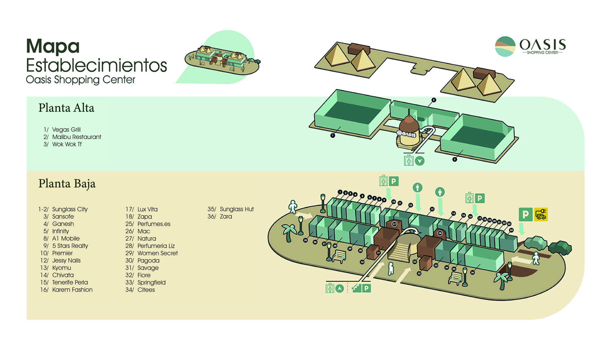

Av. de los Pirineos, 7, 28850 Torrejón de Ardoz, Madrid
Teléfono: 91 669 00 00
Email: contact@oasizmadrid.com
Renfe c2 c7 / Bus 6, 223, 824, alsa N202 Alma Parking exterior y subterraneo 📶 Conectividad Wi-Fi Gratuito: Disponible en todo el recinto para que puedas mantenerte conectado durante tu visita. 👶 Servicios para Familias Zona Infantil: Espacio dedicado para que los más pequeños disfruten de actividades y juegos. Área de Juegos: Diversión asegurada para niños con instalaciones seguras y entretenidas. Calienta Biberones: Facilidad para padres que necesitan preparar la comida de sus bebés. Préstamo de Cochecitos de Bebé: Servicio disponible para mayor comodidad durante la visita. Préstamo de Sillas de Ruedas: Para personas con movilidad reducida, asegurando accesibilidad en todo el centro. 🔌 Movilidad Sostenible Estaciones de Recarga para Vehículos Eléctricos: Oasiz Madrid cuenta con 120 unidades de carga I-ON, capaces de cargar simultáneamente hasta 241 vehículos. La carga es gratuita para todos los visitantes; solo necesitas escanear el código QR en cada unidad para iniciar el proceso. Gewiss 🛋️ Zonas de Descanso Zonas de Descanso: Espacios cómodos distribuidos por el centro para relajarse entre compras o actividades. Sala VIP: Área exclusiva para clientes que buscan una experiencia más personalizada y tranquila. Fuentes: Disponibles para refrescarse y mantenerse hidratado durante la visita. 🧳 Otros Servicios Recepción: Punto de información para resolver dudas y obtener asistencia. Ascensores y Escaleras Mecánicas: Facilitan el desplazamiento entre las diferentes plantas del centro. Pantallas Interactivas: Para consultar información del centro, tiendas y eventos. Cajeros Automáticos: Disponibles para realizar operaciones bancarias básicas. Lockers (Taquillas): Servicio de consigna para guardar pertenencias de forma segura. Objetos Perdidos: Oficina para recuperar objetos extraviados durante la visita. Préstamo de Paraguas: Disponible en caso de necesidad durante días lluviosos. Paseo Vegetal: Área ajardinada para disfrutar de un entorno natural dentro del centro. Primeros Auxilios: Servicio disponible para atender emergencias médicas menores.